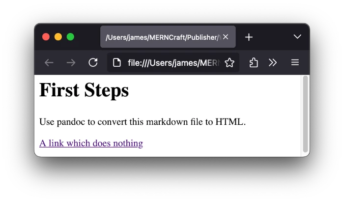
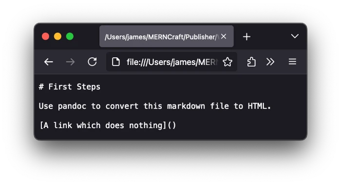
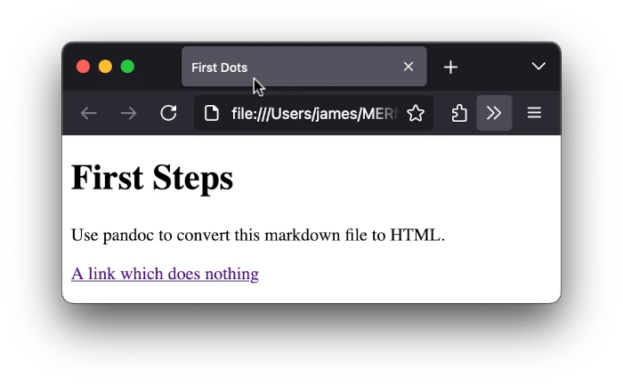
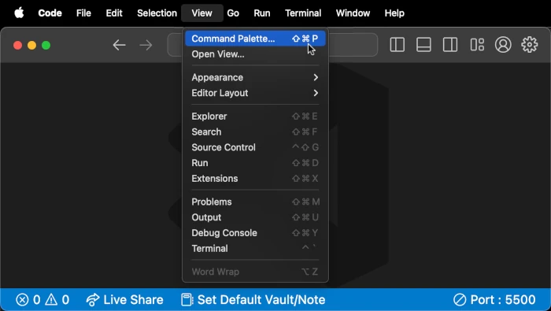

Proof Of Concept
You can start by creating a very simple Markdown document, and seeing how to convert it to HTML with pandoc.
- Create a new directory to contain your tutorial-writing project. In
the following text, I’ll assume that you called this project directory
Workflow. - Create a new file in this directory, called
input.md - Write some Markdown text in
input.md. For example, this…
# First Steps
Use pandoc to convert this markdown file to HTML.
[A link which does nothing]()File FA0. … will create a level 1 header, a line of text, and an anchor link which leads nowhere.
It’s good to work directly on the Command Line. Here’s a single command that you can use in a Terminal window, which will do all this for you:
mkdir -p Workflow && cd Workflow && cat > input.md <<EOF # First Steps Use pandoc to convert this markdown file to HTML. [A link which does nothing]() EOFConsole CAA.
- Install pandoc on your computer, and check that it is working.
- In a Terminal window that is open on your
Workflowdirectory, run this command:
pandoc -o index.html input.mdConsole CAB.
- The
-oflag indicates that the next argument will be the (relative path to) the file where pandoc will generate the converted HTML - The final argument (
input.md) tells pandoc which file to convert.
By default, pandoc will use the extensions (.html and
.md, in this case) to choose which file format to convert
to and from.
- Press the Enter key to execute this command.
You should see a new file created at
Workflow/index.html. Here’s what its contents should look
like:
<h1 id="first-steps">First Steps</h1>
<p>Use pandoc to convert this markdown file to HTML.</p>
<p><a href="">A link which does nothing</a></p>File FAA.
- Open this file in your browser.
 Figure IAA.
It looks like a web page, with a header, some text and a link.
- Out of interest, open the original
input.mdfile in your browser. You should see raw text, with no styling for the header and the link.
 Figure IAB.
The
index.htmlfile is not good HTML. The file does not have aDOCTYPEdeclaration, a<head>or a<body>element, and other basic boilerplate is missing too.The next step will be to provide a full HTML template to contain the converted MD file.
An HTML Template
Here’s a basic template that you can use:
<!DOCTYPE html>
<html lang="en">
<head>
<meta charset="UTF-8">
<meta
name="viewport"
content="width=device-width, initial-scale=1.0"
>
<title>$title$</title>
</head>
<body>
$body$
</body>
</html>File FAB.
It contains two variables that pandoc will recognize:
$title$ and $body$. When you give pandoc the
right command, it will replace the $body$ variable with the
HTML that it created during the conversion process. For now, no value is
defined for the $title$ variable. You’ll see how to work
with that in the next step.
- In your
Workflow/directory, create a new file calledtemplate.html - Paste the template text from Listing AAA into it
- In a Terminal window that is open on your
Workflowdirectory, run this command:
pandoc -o index.html --template=template.html input.mdConsole CAC.
Here, you have added the --template=template.html
directive, which tells pandoc what file to use as the HTML template for
the output.
- Look at
Workflow/index.html.
<!DOCTYPE html>
<html lang="en">
<head>
<meta charset="UTF-8">
<meta
name="viewport"
content="width=device-width, initial-scale=1.0"
>
<title></title>
</head>
<body>
<h1 id="first-steps">First Steps</h1>
<p>Use pandoc to convert this markdown file to HTML.</p>
<p><a href="">A link which does nothing</a></p>
</body>
</html>File FAC.
You should see that the $body$ variable has been
replaced by the out put that you saw in the previous section. However,
the <title></title> is empty. The
$title$ variable has been replaced by an empty string.
In the next step, you will see how to create a YAML block in your
input.mdfile that will tell pandoc what value to use for$title$, and any other variables that you might choose to use.
Variables with YAML
When YAML was first created, the name was originally an acronym for “Yet Another Markup Language”. Over time, it started being used more for data serialization than for markup, so now, officially, the name stands for “YAML Ain’t Markup Language”.
The inspiration for YAML comes from Python, where whitespace at the beginning of a line has a meaning. For this reason, you should be careful not to leave white spaces at the beginning of a line, unless you know what you are doing. In this tutorial, I’ll keep all text in YAML blocks left-aligned.
Here’s how you can edit your input.md file to tell
pandoc what value you want to use in place of the $title$
variable in template.html:
<b>---
title: First Dots
...</b><i>
# First Steps
Use pandoc to convert this markdown file to HTML.
[A link which does nothing]()</i>File FAD.
The three --- dashes at the start say: “YAML block
starts here”. The three ... at the end say: “That’s the end
of the YAML block”.
Inside the YAML block, you write a variable name (without enclosing
$ signs), followed by a : colon. The rest of
the line represents the value of the variable.
In other words, this block…
---
title: First Dots
...File FAE.
… says “a variable called title will have the value
‘First Dots’”.
I’ve used
First Dotsto remind you to end the block with dots.
- Edit your
input.mdfile so that it matches File FAD. - In the Terminal window that is open on your
Workflowdirectory, run this command again):
pandoc -o index.html --template=template.html input.mdConsole CAD.
Tip: This is exactly the same as the last command you ran in the Terminal. When the Terminal window is active, you can press the Up arrow at the bottom right of your keyboard to step backwards through the history of your commands. Press the Enter key when you reach the command you want.
You can also run the command
historyin your Terminal to see a numbered list of all your recent commands. The commandhistory X(whereXis the index number of an earlier command) will repeat that command.It’s good to know shortcuts that allow you to do less typing.
- Look at the
index.htmlfile. You should see that the<title>element now contains the value you defined in the YAML block.
<i><!DOCTYPE html>
<html lang="en">
<head>
<s><!-- Some lines skipped --></s>
<title>First Dots</title>
</head>
<body></i><b>
<h1 id="first-steps">First Steps</h1></b><i>
<s><!-- More lines skipped --></s>
</body>
</html></i>File FAD.
- Refresh the file in your browser. You should see that the browser tab has the title that you chose.
 Figure IAC.
Perhaps you want the text of the
<h1>element to match the<title>? You might think that pandoc is smart enough to allow you to use the$title$variable inside theinput.mdfile itself.SPOILER: pandoc isn’t that smart. At least, not in that way.
$variable$ names fail in Markdown
To test how pandoc treats a string like $title$ when it
is part of the body of the Markdown document…
- Edit your
Workflow/input.mdfile so that it matches File FAE below. (Replace “# First Steps” with# $title$.)
<i>---
title: First Dots
...
# </i><b>$title$</b><i>
Use pandoc to convert this markdown file to HTML.
[A link which does nothing]()</i>File FAE.
- In the Terminal window that is open on your
Workflowdirectory, run the same command again (Up arrow + Enter):
pandoc -o index.html --template=template.html input.mdConsole CAE.
- Look at what has happened in
Workflow/index.html. Theh1title has been treated to a lot of<em>tags and a"math inline"class. This is not what you wanted.
<!DOCTYPE html>
<s><!-- Some lines skipped --></s>
<h1 id="title"><span
class="math inline"><em>t</em><em>i</em><em>t</em><em>l</em><em>e</em></span></h1>
<s><!-- More lines skipped --></s>
</html>The official pandoc documentation explains:
Anything between two $ characters will be treated as TeX math.
…
If for some reason you need to enclose text in literal $ characters, backslash-escape them and they won’t be treated as math delimiters.
So what happens if you use \$ instead of
$?
- Edit your
Workflow/input.mdfile as shown in File FAF below, and see:
<i>---
title: First Dots
...
# </i><b>\$</b><i>title</i><b>\$</b><i>
Use pandoc to convert this markdown file to HTML.
[A link which does nothing]()</i>File FAF.
- In the Terminal window that is open on your
Workflowdirectory, run the same command again (Up arrow + Enter):
pandoc -o index.html --template=template.html input.mdConsole CAF.
- Look at what has happened in
Workflow/index.html. There’s no hint of<em>tags or class names now. Theh1title now shows… the raw string$title$. Pandoc has not used the value of thetitlevariable from the YAML block.
<i><!DOCTYPE html>
<s><!-- Some lines skipped --></s></i>
<b><h1 id="title">$title$</h1></b>
<i><s><!-- More lines skipped --></s>
</html></i>Pandoc has simply understood that \$title\$ should be
treated as a string with escaped $ dollar signs, but it
hasn’t recognized it as a variable name.
The next step will be to create a filter which will tell pandoc that you want any word between two
$characters to be treated as a variable.
Installing NodeJS, npm and pandoc-filter
When you ask a browser to do anything more complex than displaying a web page and its contents, a programming language called JavaScript will be at work. NodeJS is a standalone program that runs JavaScript code in the same way that JavaScript is run in the Google Chrome browser.
Basically, NodeJS is the programming-language part of Google Chrome. However, as a standalone program, it has additional features. For instance, it can read and write directly from your computer’s hard disk, and it can run node modules written in JavaScript, which can provide tools for specific jobs.
Node modules are also known as Node packages. I will use both terms with the same meaning in this tutorial.
You can think of NodeJS like a food mixer which has the power to turn an drive shaft, and node modules as the different attachments that you can attach to the drive shaft, to allow you to whisk eggs or chop up carrots or knead bread dough.
Before you can continue, you are going to need to:
- Install NodeJS on your computer. The best way to do this is with Node Version Manager (NVM)
- Install
a program called Node Package Manager (or more precisely
npm). - Use
npmto install a package calledpandoc-filter. In a Terminal window open on yourWorkflow/directory, run this command:
npm install pandoc-filterYou should see that a new folder called node_modules has
been created, and two new files called package.json and
package-lock.json have appeared. The contents of your
Workflow/ directory should now look something like
this:
.
├── input.md
├── node_modules
│ ├── get-stdin/
│ └── pandoc-filter/
├── index.html
├── package-lock.json
├── package.json
└── template.htmlA NodeJS Filter
To look into the box where pandoc has created its AST version of the
input.md file:
- Create a new file called
filter.js - Paste the text from Listing LAF into it.
I’ll describe what the code does, step-by-step, below.
It’s not important how the
// LOGGINGsection works though, so you can skip that explanation if your want. You often use tools that just work (like your smartphone or your microwave), without knowing exactly how they work. You can think of them as “black boxes” where all that matters is the input and the output, but not what happens inside. You can think of the logging process as just another black box.
#!/usr/bin/env node
const pandoc = require("pandoc-filter")
pandoc.stdio(action)
function action() {
log(arguments)
}
// LOGGING //
const { createWriteStream } = require('fs')
const logger = new console.Console(createWriteStream("filter.log"));
function log(args) {
const [{t: type, c: content}, format, meta] = args
logger.log(`type: "${type}"`)
if (content) {
logger.log(`content: ${JSON.stringify(content, null, 2)}`)
}
logger.log(`format: ${format}`)
logger.log(`meta: ${JSON.stringify(meta, null, 2)}`)
logger.log("\n-----\n")
}Listing LAF.
- In the Terminal window that is open on your
Workflowdirectory, run a new command:
pandoc -o index.html --filter filter.js input.md Here, the --filter flag tells pandoc to show each “bead”
that it has created in the AST format to the fiter.js
script. The filter.js will run log() for each
“bead”. This will append some text to a file named
filter.log, with
Note that this command does not include the
--templatedirective, so the contents ofindex.htmlwill not be a complete HTML document. Only the result of the conversion ofinput.mdwill appear.You can restore the
--templatedirective later.
- You should now find a new file at
Workflow/filter.log. It starts like this.
type: "Str"
content: "First"
format: html
meta: {
"title": {
"t": "MetaInlines",
"c": [
{
"t": "Str",
"c": "First"
},
{
"t": "Space"
},
{
"t": "Str",
"c": "Dots"
}
]
}
}
// Hundreds of lines skippedFile FAG.
- Notice that:
- Each “bead” has a blank line between it and the next. File FAG above
shows just the first bead. The official name for a “bead” is a
Block. - Each Block has entries for:
typeformatmeta
- Most Blocks also have an entry for
content. (There’s nocontentfor a Block withtype: "Space") - For many Blocks, the
contentis a word in double quotation marks, like"First"or"Dots". - For some Blocks, the
contenthas a more complicated structure. (It is an array.) - Every Block has the same entry for
meta.
- Each “bead” has a blank line between it and the next. File FAG above
shows just the first bead. The official name for a “bead” is a
meta
This is what the meta entry looks like, for every
Block.
meta: {
"title": {
"t": "MetaInlines",
"c": [
{
"t": "Str",
"c": "First"
},
{
"t": "Space"
},
{
"t": "Str",
"c": "Dots"
}
]
}
}- Compare this with the YAML block at the top of your
input.mdfile:
---
title: First Dots
...Do you see what the meta entry says, in its own
format?It says: “There’s a variable named title and its
value is: "First", followed by a Space, and
"Dots". In simpler terms: "First Dots".
- Look at the Block that starts at line 101 or so:
type: "Str"
content: "$title$"
format: html
meta: {
"title": {
"t": "MetaInlines",
"c": [
{
"t": "Str",
"c": "First"
},
{
"t": "Space"
},
{
"t": "Str",
"c": "Dots"
}
]
}
}This says: “There’s a Block with the content
"$title$".
Your next task will be to replace the content "$title$"
with the array from the meta entry.
filter.js, line by
line
I promised to explain what the code in filter.js does,
so I’ll do that now. Most of it is just temporary code to help you see
what pandoc’s AST Blocks look like, so you can skip ahead to the next
section if you want.
#!/usr/bin/env nodeThe very first line tells the program that wants to execute this file
that it is designed to be use with node, which is the code
name for NodeJS. You can find more details about this in this StackOverflow
answer.
const pandoc = require("pandoc-filter")This line tells node to use the
pandoc-filter package. Using the food-mixer metaphor, it
says: “Fix on the pandoc-filter attachement before pressing
the Start button”. It gives this package the code name
pandoc, so that it can be told what to do, later.
pandoc.stdio(action)This line says to the pandoc-filter package: “When you
have some IO (input-output) work to do, tell the action
function (see below) about what you are about to work on.
The action() function
For every Block in the AST version of your input.md
text, pandoc will send some data to the action() function.
This is the equivalent of you looking at each bead on the necklace.
function action() {
log(arguments)
}For now, all that happens is that the data (arguments)
that pandoc sends will be treated by the log() function
(see below).
For now, the action() function does not change anything
in the data. It just looks at it, notes it into the
filter.log file, nods its head and says: “Next?”
In short, the action() function intercepts data after
pandoc has convented it to its intermediate AST format, and before it
has started converting it to HTML.
Logging
In order to show you what each AST Block looks like, I have created a
logger object and a log function.
The section of the script that starts with
// LOGGINGis only temporary. It just helps you to understand what pandoc is doing. Later, when everything is working the way you want it, you will be able to delete this section of the script.
const { createWriteStream } = require('fs')
const logger = new console.Console(createWriteStream("filter.log"));The logger uses a built-in module for NodeJS called
fs, which is short for File System. This
allows me to write data to the file filter.log. Because I
have given just the name of the file the fs module will
automatically create this in the same directory as the
filter.js script itself: Workflow/.
function log(args) {
const [{t: type, c: content}, format, meta] = args
logger.log(`type: "${type}"`)
if (content) {
logger.log(`content: ${JSON.stringify(content, null, 2)}`)
}
logger.log(`format: ${format}`)
logger.log(`meta: ${JSON.stringify(meta, null, 2)}`)
logger.log("")
}I know, because I have looked at the source code for the
pandoc-filter module, that the action()
function will receive three arguments (that is, three separate
pieces of data.) Specifically, line 91 (or so) in the file at
node_modules/pandoc-filter/index.js will call:
var res = action(item, format, meta)By looking at the values of item, format
and meta before I wrote this script, I was able to see that
item is an object with two parts, with the keys
"t" (for tag or type) and
"c" (for content) similar to what you have
seen in the filter.log file. For example:
{
"t": "Str",
"c": "First"
}or
{
"t": "MetaInlines",
"c": [
{
"t": "Str",
"c": "First"
},
{
"t": "Space"
},
{
"t": "Str",
"c": "Dots"
}
]
}I thought it would be more human-readable to convert t
to type and c to content. So the line…
const [{t: type, c: content}, format, meta] = args…allows me to give a name to all the individual chunks of data that I want to know about. This process is called destructuring and you can read more about it on the MDN website.
logger.log(...)
The logger.log(...) statements append data to the
filter.log file.
JSON.stringify(<data>, null, 2)Some of the data is actually a hierarchy of data. The JSON.stringify()
statements ensure that all the data is shown, with one item per line,
indented by 2 spaces for each hierarchical level.
type: "Str" do not have an entry for
content, so there is an if (content) { ... }
block which only logs a content entry if such an entry exists.
Replacing a variable with its value
Now that you know what data pandoc sends to the action()
function, you can check for any Block where the content is
$title$… or indeed any single word that has a
$ dollar sign at each end.
Specifically, you will be looking for this Block:
type: "Str"
content: "$title$"
format: html
meta: {
"title": {
"t": "MetaInlines",
"c": [
{
"t": "Str",
"c": "First"
},
{
"t": "Space"
},
{
"t": "Str",
"c": "Dots"
}
]
}
}When the action() function detects that it has received
the Block where content is "$title$", it
should return this part of the meta entry, to replace
"$title$":
[
{
"t": "Str",
"c": "First"
},
{
"t": "Space"
},
{
"t": "Str",
"c": "Dots"
}
]Pandoc will use this meta value instead of the string
$title$ when it converts its AST format to HTML.
The simplest way to do this would be to:
- Add three lines of code to the
action()function inWorkflow/filter.js, as shown in Listing FAH below:
function action({t: type, c: content}, format, meta) {
log(arguments)
if (content === "$title$") {
return meta.title.c
}
}Listing FAH.
Note that now that you have seen what arguments the
action()function receives, you can access them directly, inside the round parentheses that follow the name of the function.
- In the Terminal window that is open on your
Workflowdirectory, run the same command that you just used (Up arrow + Enter):
pandoc -o index.html --filter filter.js input.md- Look at what has been written in
Workflow/index.html.
<h1 id="title">First Dots</h1>
<p>Use pandoc to convert this markdown file to HTML.</p>
<p><a href="">A link which does nothing</a></p>Success! The $title$ variable in the
<h1> header element has been replaced by the value of
title taken from the YAML block:
First Dots.
Regular Expressions
The version of the action() function that you have just
written only works for one variable ($title$). To make it
work for any single word with a $ sign at each
end, you need to some changes.
A good way to check if a given string follows a specific pattern is to use a Regular Expression. A regular expression is a compact way of defining the rules for a pattern of characters.
Here is a Regular Expression which will detect if a string:
- Starts with a
$sign - Continues with a string of lowercase unaccented Latin characters (anything from “a” to “z”)
- Ends with a
$sign - Contains no other characters except perhaps a
.dot, an_underscore or a-dash.
/^\$([a-z_.-]+)\$$/This corresponds to the official pandoc naming system for variables.
A regular expression look quite alien when you first see it, but there is method in this apparent madness.
You can see how this regular expression works in regex101.com. The first five example strings match the pattern defined by the regular expression. The text on the right explains step-by-step how the regular expression works.
Note how the
$has two different meanings. When it is escaped with a backslash\$it means “dollar sign”. Without the backslash, it means “final character”. So/\$$means “a dollar sign followed by no other characters”.
You’ll notice that not only does the regular expression check if it
matches the pattern, but it also extracts the characters between the
$ dollar signs, which regex101.com calls
Group 1.
Testing in the Node IDE
You can check how NodeJS treats regular expressions in an integrated development environment (IDE) in your Terminal.
- Open a new Terminal window
- Run the command
nodeto open the Node IDE - Create a variable
rwith the value of the regular expression you want to test:
r = /^\$([a-z_.-]+)\$$/- Evaluate the expression
r.exec("$title$")
Your Terminal window should look something like this:
$ node
Welcome to Node.js v23.1.0.
Type ".help" for more information.
> <b>r = /^\$([a-z_.-]+)\$$/</b>
/^\$([a-z_.-]+)\$$/
> <b>r.exec("$title$")</b>
[ '$title$', 'title', index: 0, input: '$title$', groups: undefined ]The expression r.exec("$title$") evaluates to an array.
JavaScript starts counting from 0, so:
- Item
0of the array is the full string that matches the regular expression. - Item
1gives the part of that match that is inside the capturing group that is defined by the()round parentheses. - The
indexvalue says that this match started when there were0characters to the left - The
inputvalue reminds you of the entire string that you tested in order to find the given pattern groupshas the valueundefined, because this regular expression did not used an advanced feature where you can create capturing groups with specific names.
- Now check what happens if the string inside the round parentheses does not match the pattern, or if it is not a string:
> <b>r.exec("$title")</b>
null
> <b>r.exec()</b>
null
> <b>r.exec(42)</b>
null
> <b>r.exec([])</b>
nullWhen there is no match, the expression evaluates to
null, which is one of the ways JavaScript has for saying
“nothing at all”.
The important point to note is that when the string does
match the regular expression pattern, you get an array where the item
1 is the input string stripped of its $
characters.
You can use the item 1 string to look for a replacement
in the meta block.
Using this regular expression, you can edit your
action() function so that it will:
- Look for any
contentthat has the$doubledollar$pattern - Create a variable call
key, whose value will be the same string but without the$dollar signs - Check if the
metaentry contains an entry for this dollar-free string, and if so, return the value for its.centry.
Remember that the
metaentry looks like this…meta: { "title": { "t": "MetaInlines", "c": [ { "t": "Str", "c": "First" }, { "t": "Space" }, { "t": "Str", "c": "Dots" } ] } }… so if the value of
keyistitle,meta[key].cwill be the same asmeta.title.c.
- Edit the beginning of your
filter.jsscript, so that it matches File FAJ below
const pandoc = require("pandoc-filter")
const REGEX = /^\$([a-z_.-]+)\$$/
pandoc.stdio(action);
function action({t: type, c: content}, format, meta) {
log(arguments)
const match = REGEX.exec(content)
if (match) { // content is like `$title$`
const key = match[1] // key will be like `title`
const swap = meta[key]
if (swap) {
return swap.c // an array from `meta`
} // else returns undefined
}
}File FAJ.
If there is no match, or if the matching key has no entry in the
meta array, then your action() function will
return undefined, which is another of JavaScript’s ways of
saying “nothing at all”.
As the official
documentation says: > If [the action() function]
returns nothing, the node is unchanged; if it returns an object, the
node is replaced.
When content is "$title$, the object that
is returned will be …
[
{
"t": "Str",
"c": "First"
},
{
"t": "Space"
},
{
"t": "Str",
"c": "Dots"
}
]… which contains the AST for “First Dots”.
Testing the generic
action()
To test if this new generic action() function works
correctly, you can:
- Change the value for
titlein the YAML block - Add a new variable in the YAML block of your
input.mdfile, and use it in the body of the file, as shown in Listing LAI below:
<i>---
title: </i><b>First Steps Complete</b>
subtitle: Success!</b><i>
...
# \$title\$</i>
<b>## $subtitle$</b><i>
Use pandoc to convert this markdown file to HTML.
[A link which does nothing]()</i>- In the Terminal window that is open on your
Workflowdirectory, run the same command that you just used (Up arrow + Enter):
pandoc -o index.html --filter filter.js input.md- Check what was written to your
index.htmlfile. It should be something like this:
<h1 id="title">First Steps Complete</h1>
<h2 id="subtitle">Success!</h2>
<p>Use pandoc to convert this markdown file to HTML.</p>
<p><a href="">A link which does nothing</a></p>Congratulations! Pandoc has used the value of both YAML variables to replace their dollar-wrapped names. You have successfully created your first JavaScript filter for pandoc!
You’ve made pandoc work with one simple Markdown file. To create a multi-part tutorial, you’ll need to discover how to make pandoc produce a single HTML file from multiple Markdown files, with a shared HTML template.
But this tutorial is about workflow as much as it is about writing tutorials. You’re going to be performing the same actions repetitively, and the more you write, the more time you can save if you first automate these actions.
Scripts and Shortcuts
How many times have you already executed one of these commands in the Terminal?
pandoc -o index.html --template=template.html input.mdpandoc -o index.html --filter filter.js input.mdIt’s good that you can press the Up arrow key and then Enter, but you do have to select the Terminal window first. And if you have to do other work in the Terminal, there might be other commands that fill up your recent history.
Wouldn’t it be good if you could just use a simple keyboard shortcut, while you are typing in the Text Editor?
Actually, soon you will be combining the two commands, and later you will need to add more arguments. I’ll show you two techniques that you can combine to make your life simpler:
- Creating an
npmscript - Creating a VS Code keybinding to run the script
The keybinding requires a trick that is not very intuitive, so I’ll also show you a technique for:
- Making keybindings for other commands that you might execute in the Terminal often.
Creating an npm script
When you ran npm install pandoc-filter back in Section
6, npm created a file called package.json at the root of
your Workflow/ directory. Its contents currently look
something like this:
{
"dependencies": {
"pandoc-filter": "^2.2.0"
}
}- Add a new “scripts” section, with a key called
"pandoc"and a value which merges the two commands that you have already used, as shown below.
<i>{</i>
<b>"scripts": {
"pandoc": "pandoc -o index.html --filter filter.js --template=template.html input.md"
},</b><i>
"dependencies": {
"pandoc-filter": "^2.2.0"
}
}</i>- Run this simpler command in the Terminal:
npm run pandocThis tells the Node Package Manager to read the "pandoc"
script that you just added to the "scripts" section of
package.json, and to tell the active Terminal to run it.
The most recent lines in your Terminal should look something like
this:
$ <b>npm run pandoc</b>
> pandoc
> pandoc -o index.html --filter filter.js --template=template.html input.mdBut this hasn’t helped very much yet. You still have to activate the Terminal, and type something into it. In the next step, you’ll see how to send use a keyboard shortcut to give this same command to the Terminal.
VS Code Key Bindings
Virtual Studio Code allows you to customize your keyboard shortcuts or Key Bindings.
It even allows you to create Key Bindings for the Terminal. Specifically, this “only works with the \u0000 format”. Scary?
I’ll show you first how to create a key binding that will run the
command npm run pandoc, even if you don’t have an
integrated Terminal window open.
Open the Command Palette. The lazy way to do this is to select the menu item View > Command Palette. 
You’ll notice that the menu item shows a keyboard shortcut: Ctrl-Shift-P. In the future, you can use the shortcut instead and save a few precious seconds.
There’s an even shorter shortcut though. With only one finger, you can press the
F1key on your keyboard. However, your keyboard may be set up to activate a media control when you pressF1. In that case, you can press both thefnand theF1keys, but a better solution is to toggle the function lock. You can seach on Google to see how to do this on your operating system.
- With the Command Palette open, start typing the word
keyboard. You won’t have to type the whole word before the auto-complete system will suggestPreferences: Open Keyboard Shortcuts (JSON).
- Press Enter to select this item (or lose a few precious seconds by moving your mouse to click and make the selection).
- A new VS Code window will open, showing you the
keybinding.jsonfile where all your keyboard shorcuts are stored. Copy the following JSON object…
,
{
"key": "ctrl+shift+alt+p", // use your own shortcut
"description": "Runs \'npm run pandoc'\ in the Terminal",
"command": "workbench.action.terminal.sendSequence",
"args": {
"text": "\u006E\u0070\u006D\u0020\u0072\u0075\u006E\u0020\u0070\u0061\u006E\u0064\u006F\u0063\u000A"
}
}- … and paste it at the end of the of the file, as shown in File Listing XXX above.
Make sure that there is a final
}closing curly brace after the chunk of text that you pasted in, and that there are no extra,comma characters. If the{}curly braces or commas are not correctly balanced in this file, it could fail to work.
I’ve chosen the key binding
ctrl+shift+alt+p(withpstanding forpandoc), but you can edit the entry for"key"to suit your own preferences.Bring to the front the window where you are working on your Workflow project and press the keyboard shortcut that you chose. If all goes well, you should see the following in your Terminal window:
<b>npm run pandoc</b>
> pandoc
> pandoc -o index.html --filter filter.js --template=template.html input.mdIn other words, with a single keyboard shortcut, you have been able
to run the whole
pandoc -o index.html --filter filter.js --template=template.html input.md
command. All that matters is that the project window that contains your
package.json file is the active window. It doesn’t matter
which panel in that window you are working in.
As you learn more about pandoc, you can update the
"pandoc" script in the package.json file, and
continue to use the same keyboard shortcut to execute it.
This shortcut expects that:
- You have a file named
package.jsonin your active project- Your
package.jsoncontains a"scripts"section where a script named"pandoc"is definedIf you press this keyboard shortcut in VS Code when working on a different project, you might see one of these errors:
npm run pandoc npm error code ENOENT npm error syscall open <s># + more error details</s> npm error enoent Could not read package.jsonnpm run pandoc npm error Missing script: "pandoc" <s># + more error details</s>This is normal. You would get exactly the same error if you explicitly typed
npm run pandocin a Terminal that is unable to make sense of this command.
But what’s this strange
"text":"\u006E\u0070\u006D\u0020\u0072\...entry, and how does it work? That’s what you will see next… if you want to.
Using workbench.action.terminal.sendSequence
When you create key bindings for the Terminal, you have to talk in the language that the Terminal understands.
When you look at this page, you see words. Since your early childhood, you have trained your brain to recognise that footprints in the mud combine to show where someone was going, and that letters on a page combine to give a specific meaning. You have built up a personal knowledge of the world that computers do not have.
All that computers can see are zeroes and ones. Actually, they don’t even see that; they see two contrasting electro-magnetic patterns, that we humans like to call zeroes and ones.
So when you see the letter “a” on your screen, the computer sees the
electro-magnetic equivalent of 1100001, which is the binary
representation of the number 97. You are used to reading Latin letters
(A-Z, a-z), but there are hundreds of different writing systems, and
some, like Chinese, have many more characters than the Latin alphabet.
Over the centuries, humans have created thousands of meaningful
characters.
Humans have developed a system called Unicode which is designed to represent every character, symbol, emoji and meaninful squiggle into a number that a computer can store. It even has numbers for characters that you can’t see, like U+200B ZERO WIDTH SPACE and control characters like U+000A LINE FEED, which says “the next character starts on the next line”.
For you, the numbers 1 and 11 are very
different. But if you put them side-by-side, you wouldn’t know if your
were looking at “one” and “eleven”, or “eleven and one” or “one hundred
and eleven”. One easy solution is to say: “We will only count from 0 to
99, and any single-digit numbers must be padded with a zero.” With this
rule, it’s easy to see the difference between 0111 (“one”
and “eleven”) and 1101 (“eleven and one”)… but “one hundred
and eleven” cannot be written in this system.
You’ll be padding numbers with zeroes yourself shortly.
The Unicode system uses thousands of different numbers, so it needs to use a fixed number of separate spaces, big enough to hold the biggest numbers, and it needs to pad all numbers except for the very biggest with zeroes.
One standard is to use 4 hexadecimal characters for each number, from
0000 (zero) to FFFF (65535). Each hexadecimal
digit is a shorthand for 4 bits (or binary digits). These range
from 0000 (binary zero) to 1111 (8 + 4 + 2 + 1
= 15). This means that the system will use numbers that are stored with
16 bit spaces..
The letter “a” is represented by the number 97 which is
4 x 16 + 1 or 41 in hexadecimal, or
0041 in the Unicode system that I am describing.
To tell the computer to expect that a particular group of 16
zeroes-and-ones is actually a Unicode character, the number is preceded
(in human eyes) by \u. So “a” for you is
\u0041 to the computer.
If you visit the DenCode website,
you can paste the sequence
\u006E\u0070\u006D\u0020\u0072\u0075\u006E\u0020\u0070\u0061\u006E\u0064\u006F\u0063\u000A
into the input field, and you will see npm run pandoc⏎ in
the output field.
Actually, you won’t see the ⏎LINE FEED character,
because it’s invisible, but it’s there. It has to be included in the
sequence that you send to the Terminal, so that the Terminal knows not
just to display the string npm run pandoc but also to do
the equivalent of pressing the Enter key, to execute the command.
Converting to Unicode Escape format
If you want to create your own key bindings to use with the
"workbench.action.terminal.sendSequence" command, you can
use the create a script that will do this for you.
- Create new folder, in the place where you keep stuff that might be useful later
- Create a new file in this new folder and call it
createKeyBinding.js
if you want to do this all from the Terminal, run :
# Edit the following line to choose your own target directory: <b>dir=~/Documents/CoolTools/npm</b> # Create the directory, if necessary, and cd into it <b>mkdir -p $dir && cd $dir</b> # Create a new (empty) file and open it in VS Code <b>code createKeyBinding.js</b>
- Paste the following code into
createKeyBinding.js. Yes, it’s long, but it’s mostly explanatory comments.
// Read input from the command line.
// `process.argv` is an array. The first two items will be
//
// 0: The absolute path to the node executable file
// 1: The absolute path to the file you want node to run
//
// Any remaining items will be the words that followed the
// `node <scriptname>` command. For example, if you run the
// command...
//
// node createKeyBinding.js three word argument
//
// ... process.argv will be something like this:
//
// [
// '/path/to/node',
// '/path/to/createKeyBinding.js',
// 'three',
// 'word',
// 'argument'
// ]
// console.log("process.argv:", process.argv, "\n\n")
// Ignore the first two items, and just keep the words that were
// given after the name of the file to run...
let input = process.argv.slice(2)
// ... or use "npm run pandoc" if no input is given
if (!input.length) {
input = "npm run pandoc"
} else {
// Input from the command line will be separate words that need
// to be joined into one continuous string.
input = input.join(" ")
}
// Convert input to an array of individual characters
const charArray = [...input] // or input.split("")
// Define a callback function that can be used with Arra.reduce()
function escape(cumul, char) {
// Assume all characters in input will be ASCII characters
// (No emojis or symbols from other writing systems)
return cumul
+ "\\u00"
+ char.charCodeAt(0)
.toString(16)
.toUpperCase()
}
// Generate a string of Unicode Escape characters, beginning
// with an opening " double quote mark and ending with the
// Line Feed character followed by a closing double quote mark.
//
// The character `\` has the special meaning of "ignore the next
// character, or treat it in a special way". For example `\n`
// means "new line".
//
// To include the character `\` in a string, it must be _escaped_
// with another `\` character. In other words: `\\` means "ignore"
// the fact that `\` means ignore the next character, and use the
// second `\` character exactly as it is.
//
// When used as the text for the
// workbench.action.terminal.sendSequence command, the Line Feed
// character will tell the Terminal to execute the preceding text.
const escaped = charArray.reduce(escape, '"') + '\\u000A\"'
console.log(`
### Paste the following JSON block into keybindings.json
,
{
"key": "ctrl+shift+alt+X", // use your own shortcut
"description": "Runs '${input}' in the Terminal",
"command": "workbench.action.terminal.sendSequence",
"args": {
"text": ${escaped}
}
}`)Read the code and the comments, and check that you can understand what the code does.
In your terminal, run
node createKeyBinding.js.
You should see something like this in your Terminal.
## Paste the following JSON block into keybindings.json
,
{
"key": "ctrl+shift+alt+X", // use your own shortcut
"description": "Runs 'npm run pandoc' in the Terminal",
"command": "workbench.action.terminal.sendSequence",
"args": {
"text": "\u006E\u0070\u006D\u0020\u0072\u0075\u006E\u0020\u0070\u0061\u006E\u0064\u006F\u0063\u000A"
}
}- Compare this output with the JSON block that you used for
npm run pandocin thekeybindings.jsonfile… except for thepthat I used for the keyboard shortcut. Now you know where it came from.
Create your own keybinding
If you find that your are running the same command in the Terminal
very often, you can use this script to generate the JSON block that you
need to add to your keybindings.json file.
For example:
- Run the command
node createKeyBinding.js echo Keybindings are cool!
Here’s what you should see in the Terminal:
<b>node createKeyBinding.js echo Keybindings are cool!</b>
### Paste the following JSON block into keybindings.json
,
{
"key": "ctrl+shift+alt+X", // use your own shortcut
"description": "Runs \'echo Keybindings are cool!'\ in the Terminal",
"command": "workbench.action.terminal.sendSequence",
"args": {
"text": "\u0065\u0063\u0068\u006F\u0020\u004B\u0065\u0079\u0062\u0069\u006E\u0064\u0069\u006E\u0067\u0073\u0020\u0061\u0072\u0065\u0020\u0063\u006F\u006F\u006C\u0021\u000A"
}
}Now you can:
- Copy this JSON block and paste it into your
keybindings.jsonfile - Customize the shortcut that you want to use
- Save your
keybindings.jsonfile - Press your chosen shortcut combination
- Check the output in your Terminal. Does it look like this?
<b>echo Keybindings are cool!</b>
Keybindings are cool!Agreed, this is not a very useful command, so you can delete it after
you’ve finished playing with it. In the future, though, you can find
your createKeyBinding.js file in the place where you keep
stuff that might be useful later, and use it to make repetitive tasks
easier.
It’s time to get back to converting Markdown and YAML to HTML.
Multiple Pages
If you are anything like me, you like to use a separate Markdown
document for each section in your tutorial. Personally, I want to create
a new <section> in my HTML file for each document
that I create in Markdown. I also like to use the
<aside> element for additional information that
readers can skip if they are in a hurry.
This means treating three issues:
- Getting pandoc to merge multiple MD documents into the same HTML output file
- Getting pandoc to wrap the HTML output from each MD document in a
<section></section>element, even though regular Markdown does not have the concept of sections. - Creating
<aside></aside>elements, hopefully in a similar way.
Merging multiple MD documents is the easiest, so you can start with that.
- Create a new file in your
Workflow/directory, and call itanother.md - Give it a YAML block with its own values for
titleandsubtitle, and some text of its own, as shown in File FAK below
---
title: Another Document
subtitle: Who goes first?
new: new value for a new
...
another.md has a \$new\$ variable
# \$title\$
## \$subtitle\$
Pandoc can merge multiple markdown files to the same HTML page.File FAK.
- In your
package.jsonfile, change your"pandoc"script to use*.mdinstead ofinput.mdas the Markdown source.
<i>{
"scripts": {
"pandoc": "pandoc -o index.html --filter filter.js --template=template.html </i><b>*.md</b><i>"
},
"dependencies": {
"pandoc-filter": "^2.2.0"
}
}</i>This will allow you to see how the variables in the YAML blocks are applied both in the “template” part of the output file, and in the “markdown” part.
- Press your new keyboard shortcut for
npm run pandoc. (In the future, I’ll just write “runpandoc”, and you’ll know to use your keyboard shortcut.) - Look at the HTML that pandoc generates for you in the
index.htmlfile:
<!DOCTYPE html>
<html lang="en">
<head>
<meta charset="UTF-8">
<meta
name="viewport"
content="width=device-width, initial-scale=1.0"
>
<title>First Steps Complete</title>
</head>
<body>
<p>another.md has a new value for a new variable</p>
<h1 id="title">First Steps Complete</h1>
<h2 id="subtitle">Success!</h2>
<p>Pandoc can merge multiple markdown files to the same HTML page.</p>
<h1 id="title-1">First Steps Complete</h1>
<h2 id="subtitle-1">Success!</h2>
<p>Use pandoc to convert this markdown file to HTML.</p>
<p><a href="">A link which does nothing</a></p>
</body>
</html>Is this what you expected? Do you notice the following points:
- The value used for
$title$in<title>First Steps Complete</title>was taken from theinput.mdfile. - The converted contents of both
another.mdandinput.mdhave been added toindex.html. - The
another.mdfile was processed first. - The value for the
newvariable fromanother.mdhas been correctly substituted. - The values for both
$title$and$subtitle$inanother.mdwere taken from theinput.mdfile - The
input.mdfile was processed second, and all its values are the same as they were before.
The same variables name cannot have two values
From this, you can see that when the same YAML key is used with different values, only one of those values is used. Another values for the same key will be discarded.
In this case, on my computer, the values from the second file that
was processed overwrote the values from the first Markdown file. In the
official pandoc documentation, the reverse situation is described.
Perhaps this is an issue with the JavaScript port of
pandoc-filter.
In any case, the lesson to be learned is that data will be lost if you use the same variable names with different values in different source files.
A wild card to select all Markdown files
The * asterisk in the argument that indicates the name
of the source Markdown file is a wild card. The name
*.md will match all files whose names have the
.md extension.
The files were processed in alphabetical order. If you want them to be processed in a specific order, you can prefix their names with numbers. For example:
- Rename
input.mdto01-input.md - Rename
another.mdto02-another.md
Note that I have used zeroes to pad the numbers. Files will be sorted alphabetically, and alphabetically
11comes after1and before2. By using zero-padding, I can be sure that the files whose names begin with01,02and11will be treated in the order I want them to.
- Run
pandoc - Look at the HTML that pandoc generates for you in the
index.htmlfile:
<!DOCTYPE html>
<html lang="en">
<head>
<meta charset="UTF-8">
<meta
name="viewport"
content="width=device-width, initial-scale=1.0"
>
<title>Another Document</title>
</head>
<body>
<h1 id="title">Another Document</h1>
<h2 id="subtitle">Who goes first?</h2>
<p>Use pandoc to convert this markdown file to HTML.</p>
<p><a href="">A link which does nothing</a></p>
<p>another.md has a new value for a variable</p>
<h1 id="title-1">Another Document</h1>
<h2 id="subtitle-1">Who goes first?</h2>
<p>Pandoc can merge multiple markdown files to the same HTML page.</p>
</body>
</html>This time the 01-input.md file was processed first, and
the variables from the YAML block in 02-another.md
overwrote the values from 01-input.md.
It’s clear that it would be safest to use a YAML block only in one Markdown file.
Now, what’s the best way to create distinct sections in the HTML file, corresponding to the content of the different source Markdown documents?
HTML in Markdown
Guess what? Markdown allows you to include HTML elements, and pandoc will pass them through the conversion process unchanged.
From the pandoc documentation:
Markdown allows you to insert raw HTML … anywhere in a document…
The raw HTML is passed through unchanged…
I want each Markdown document to be a separate
<section> in the final HTML. I want each section to
follow the same template.
<section
id="section-id"
data-item="Title for Menu"
>
<h2>Title for Page</h2>
Some content
</section>The template.html that I use automatically generates a
menu at the left of the page, using data from the section’s attributes.
See: that’s how this tutorial that you are reading now works. if the
viewport is wide enough, the menu will always be visible, if not, it
will slide out of the way and leave a hamburger icon so you can show it
again any time you want. Clicking on any menu item will show you the
associated section, as if it were a separate page.
Pandoc’s custom markdown
Pandoc provides custom markdown that can produce a similar template.
Pandoc Markdown
::: {.section #section-id data-item="Title for Menu"} ## Title for Page Some content :::HTML output
<section id="section-id" data-item="Title for Menu"> <h2 id="title-for-page">Title for Page</h2> <p>Some content</p> </section>Notice, however, that pandoc has added an
id="title-for-page"to the<h2>element. Eachidattribute in a page must be unique, so the automatic creation of thisidthat you did not ask for may lead to subtle problems. Not only that, but if theidthat you choose is identical to that which would have been generated for the<h2>header, then _the<h2>header does not get anidof its own.There are other reasons for not using pandoc’s custom markdown for sections, which I describe below.
“Now wait a minute!” I hear you say. “I thought the whole point of this tutorial was to work in Markdown, and avoid writing any HTML.
Yes. You are right. I’m going to use HTML, but I’m going to get VS Code to write it for me. That’s what I’ll show you next.
Using VS Code Snippets
I don’t want to type custom HTML in my Markdown document. I specifically chose to use Markdown so that I would have less to type.
VS Code provides a powerful set of code completion tools called snippets.
As you are typing in a document, VS Code will propose auto-completion
suggestions. If you choose one by pressing the Tab or
Enter key, VS Code will insert a chunk of predefined text,
and allow you to customize it in predefined places.
Here’s a simple snippet that I use to create the section
template that I showed above.
"section": {
"prefix": "section",
"body": [
"<section\n id=\"${1:section-id}\"\n data-item=\"${2:Title for Menu}\"\n>\n <h2>${3:$2}</h2>\n $0\n</section>"
],
"description": "Customize id, data-item and header. Add content."
}When I start typing the prefix (section in
this case), VS Code opens a pop-up which allows me to select this
snippet.
Notice that I only had to type the first two letters to make this
appear. When I press the Tab key, this whole chunk of HTML
is inserted in my Markdown page.
<section
id="section-id"
data-item="Title for Menu"
>
<h2>Title for Menu</h2>
</section>Even better! If you look closely at the image above you will see that
the text section-id is selected. That’s because this
snippet contains several tabstops: editable zones where I can
type the text I want instead of the placeholders.
${1:section-id}${2:Title for Menu}${3:$2}
Better yet, the tabstops for the data-item and the
<h2> text are linked.
When I press the Tab key, the selection jumps to the
next tab stop. When I change the text for the data-item
(the text which will appear in the menu), the text for the
<h2> element changes at the same time.
I can then press the Tab key again, and tweak the the
text for the <h2> element, if I want it to be more
detailed than the entry in the menu.
I imagine that you want to try this out for yourself. However, typing
sectioninto a Markdown document is unlikely to show any pop-up selector. You’ll have to: * ActivatequickSuggestionsfor Markdown in VS Code * Add a JSON block, like the one above, to yourmarkdown.jsonsettings file.
Activating Markdown Snippets
By default, VS Code snippets are disabled in Markdown files. You’ll probably need to activate them before you can continue.
- Open the Command Palette (
Ctrl-Shift-PorF1, remember?) - Start typing
user settings, until you see the option forPreferences: Open User Settings (JSON) - If this is the first item, you can press Enter to select it. Otherwise you can use the arrow buttons on your keyboard to move the selection highlight before you press enter. (Or you can use your mouse… if you think that that will be quicker.)
- The
settings.jsonfile should open. Use the Find dialog to search formarkdown. (PressCtrl-F, for “Find” if you don’t see the Find dialog.)
You should see a JSON block with an entry for
"editor.quickSuggestions".<i>"[markdown]": { <s><!-- Some lines skipped --></s> <u>"editor.quickSuggestions":</u> { "other": </i><b>"on"</b><i> } }</i>Set the value of
"other"to"on".
Now you can add some custom snippets for Markdown.
Title for Menu
Snippet Transforms
No contentDifferent Types Of Content
Snippets for content
The content of the page will contain various items:
- Ordinary paragraphs
- Ordinary bulleted lists, like this one
- Code listings, with syntax highlighting that makes it clear where new code has been added
- Extracts showing input and output in the Terminal
- Images with captions
- Quotes from official documentation and other sites
- Colour-coded asides for tips, warnings and points to note
- Collapsed sub-sections that you can open to go deeper into a topic if you have time.
Goals
- Templates for Intro and Conclusion pages
- Each markdown document is a
<section> - Insert data-item for each section
- Use links inside
<hX>tags, with popout::beforehash - Create VS Code snippets for common structures
- Create keybinding to
run pandoc - Create ASCII->UnicodeEscape converter
- Create
<aside>elements in various flavours- none = note (green)
- tip (gold)
- vscode (blue)
- question (purple)
- warn (brown)
- alert (red)
- Nested iframes with commonly re-used asides
- Syntax highlighting and line numbering
- Lowlighting of existing code / highlighting of new code
- Highlighting of console commands
- Numbering of images, code listings and console
- Collapsible menu
Footer with Prev and Next buttons
- Integration into a Tutorial platform
- Jira-like task manager
Introduction
The goal of this tutorial is to create a workflow for publishing your own tutorials online. This workflow will allow you to:
- Write the content of your tutorials in Markdown (MD) using Microsoft’s free Visual Studio Code (VS Code)
- Use VS Code snippets to insert commonly-used customizable chunks of Markdown
- Write your tutorial in separate sections, with one MD document containing each section
- Convert your set of MD documents to a single HTML page using pandoc
- Use a template for the HTML page which contains:
$variables$for the title, the publication date, the associated GitHub repository and other details- Links to CSS files
- A link to a JavaScript file that will automatically generate a collapsible menu for all the sections
- Links to CSS and JavaScript files created by Prism, in order to display code listings with highlighted syntax
- Update the HTML version of your tutorial, with a simple keyboard shortcut, after you make changes to the MD text
- View the updated HTML version live in multiple browsers
Why pandoc?
I use pandoc to convert files from Markdown to HTML. There are two important reasons for this: * pandoc can convert multiple Markdown files into a single HTML file * pandoc allows you to customize the conversion process
Customization in JavaScript
The official documentation for pandoc assumes that you are familiar with programming languages such as Haskell, Lua or Python. The tutorials that I want to publish are about web development with the MERN stack. This means that the programming language I am most proficient in is JavaScript. The published tutorial uses JavaScript to make it user-friendly.
For this reason, I have chosen to use JavaScript in the tutorial-publishing workflow. I understand that you may be writing tutorials for JavaScript-free situations, so I do not assume that you are familiar with JavaScript. I will take time to explain how it works. I do assume, however, that you have experience with other programming languages, and with HTML and CSS.
This tutorial will be very meta: a tutorial about writing and publishing this very tutorial. Hold on tight!